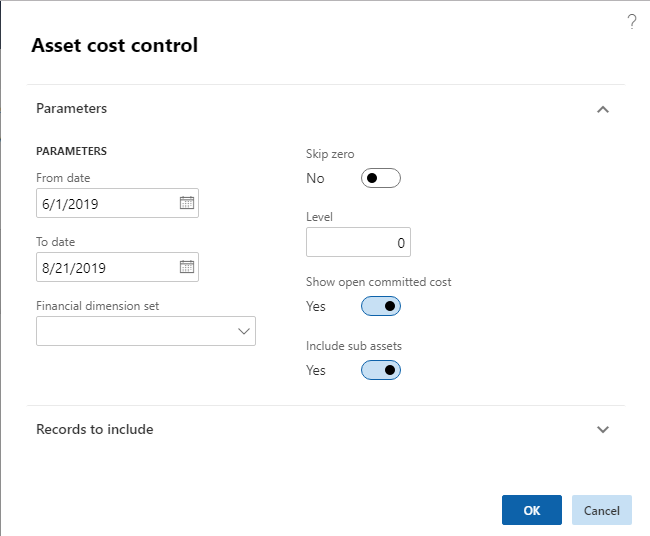
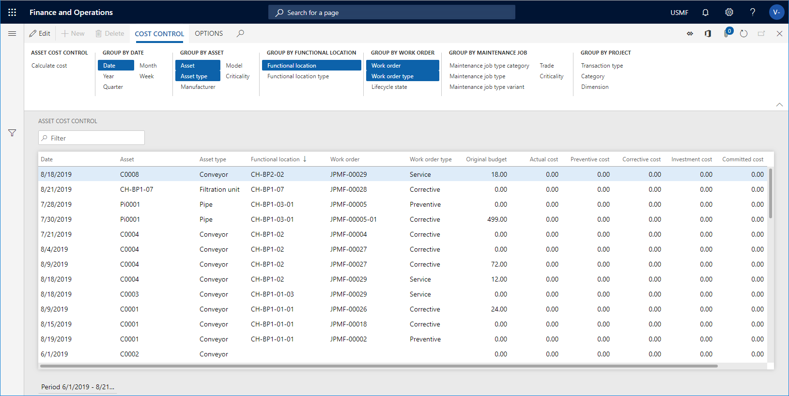
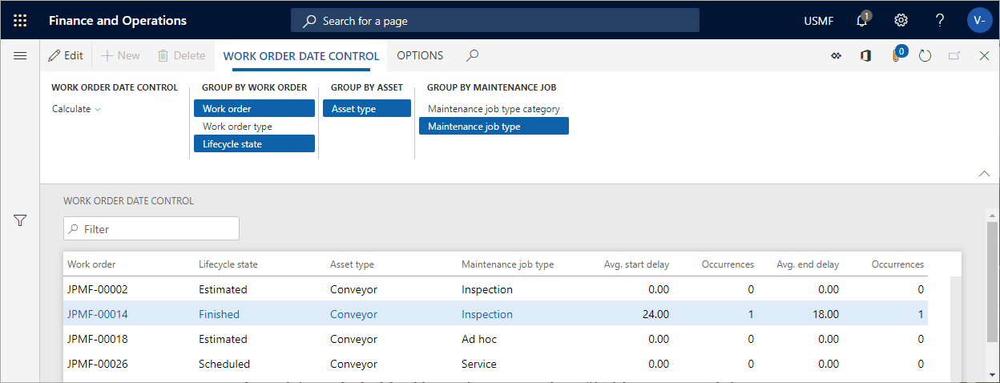

Cost and date control
In Asset Management, you can calculate costs to get an overview of actual costs compared to budget costs on assets, functional locations, and work orders. Actual costs are based on posted transactions.
You can also make a date calculation if you want to compare scheduled start and end dates to actual start and end dates on work orders.
Cost control for assets, functional locations, and work orders
The calculations made for assets, functional locations, and work orders are almost identical. The only difference is that for assets and functional locations, you can also include sub assets and sub locations in your calculation. The date is the transaction date when the registration was recorded.
Click Asset management > Inquiries > Assets > Asset cost control or Functional location cost control, or Asset management > Inquiries > Work orders > Work order cost control.
In the Asset cost control / Functional location cost control / Work order cost control dialog, select a time range to be calculated.
If required, select a financial dimension set to be included in the calculation.
Select "Yes" on the Skip zero toggle button if you don't want to show results with a cost of zero.
You can use the Level field to indicate how detailed you want the cost control lines to be regarding functional locations.
For example, if you insert the number "1" in the field, and you have a multi-level functional location hierarchy, all cost control lines for a functional location will be shown on the top level, and therefore the hours on a line may be added up from functional locations located at a lower level.
If you insert the number "0" in the Level field, you will see a detailed result showing all cost control lines on all the functional location level to which they are related.
Select "Yes" on the Show open committed cost toggle button if you want to include that column in the calculation.
Select "Yes" on the Include sub assets toggle button to show costs related to sub assets as separate lines.
If you want to limit the search, you can select specific assets / functional locations / work orders on the Records to include FastTab.
Click OK to start the calculation.
The figure below shows an example of the Asset cost control dialog.

On the Asset cost control page, click the Group by buttons to show the required detail level of the calculation. The selected Group by buttons are highlighted. Click on a button to activate or deactivate it.
Example
The screenshot below shows an example of calculation results in Asset cost control.
- The Original budget field shows budget costs from the work order forecast.
- The Committed cost field shows the total amount of expenses that a legal entity has committed itself to pay.
- The Open committed cost field shows commitments to pay for items, hours, and services you have ordered or received but not yet paid for.
- The Actual cost field shows related costs after all consumption registrations have been posted.

Another way of making a cost calculation is to multi-select assets in All assets or Active assets. Then, you click the Cost control button on the General tab. In the Asset cost control dialog, the selected assets are automatically inserted in the Asset field on the Records to include FastTab. Click OK, and a cost calculation for the selected assets is shown. The same procedure can be done for functional locations in All functional locations or Active functional locations, and for work orders in All work orders or Active work orders.
Work order date control
Use this page to get an overview of expected start and end dates compared to actual start and end dates on work orders.
Click Asset management > Inquiries > Work orders > Work order date control.
Click Calculate.
Select a functional location in the Functional location field.
Insert the range for which you want to make the calculation in the From date and To date fields. All work orders with expected start date within the range will be included.
Click OK.
Click the Group by buttons to show the required detail level of the calculation. The selected Group by buttons are highlighted. Click on a button to activate or deactivate it.
Example
The screenshot below shows an example of calculation results in Work order date control.
- The Avg. start delay field shows the difference in days between scheduled start date for a work order compared to actual start date. If, for example, the actual start date was two days before the scheduled start date, "-2" will be displayed in this field.
- The Avg. end delay field shows the difference in days between scheduled end date for a work order compared to actual end date. If, for example, the actual end date was three days after the scheduled end date, "3" will be displayed in this field.
- The Occurrences fields show the number of times deviations occur in relation to scheduled and actual start date, and scheduled and actual end date on the work order.
